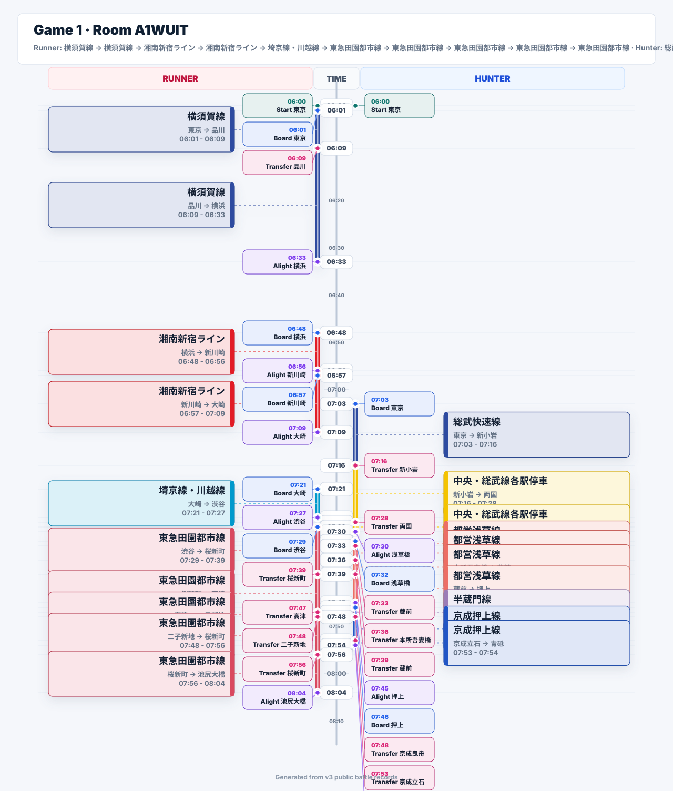
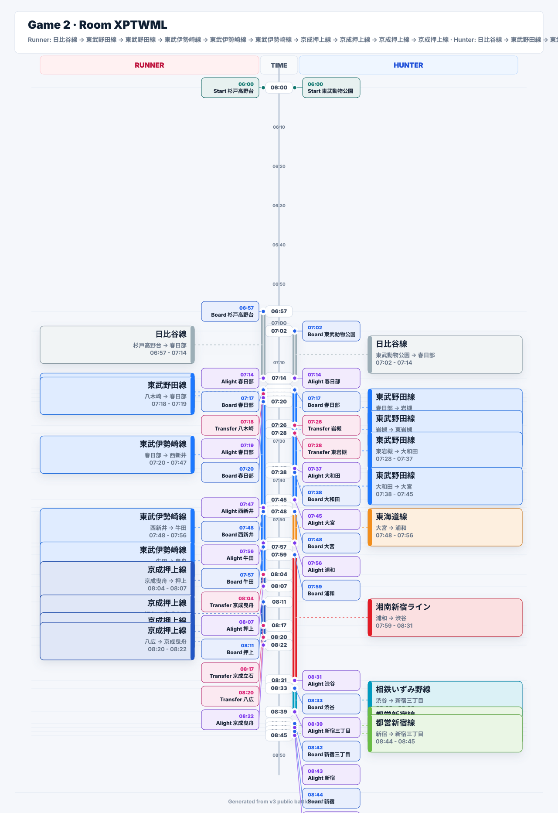
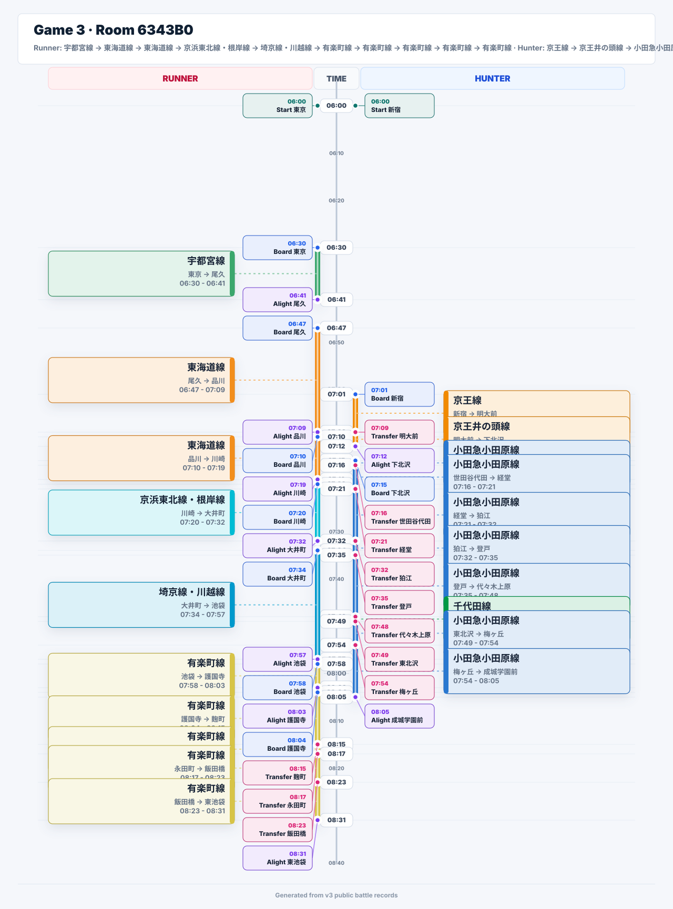
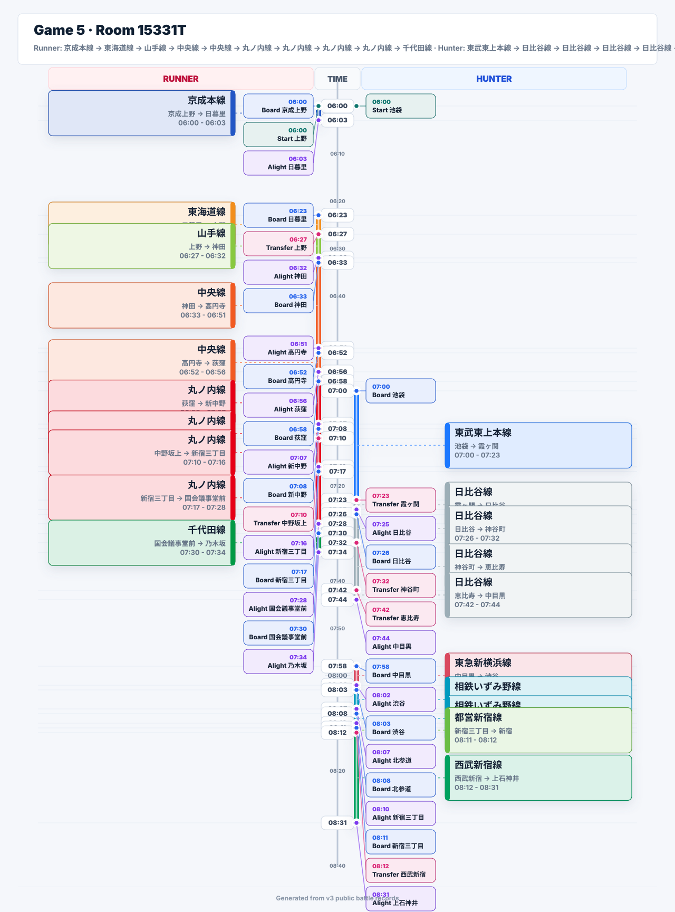
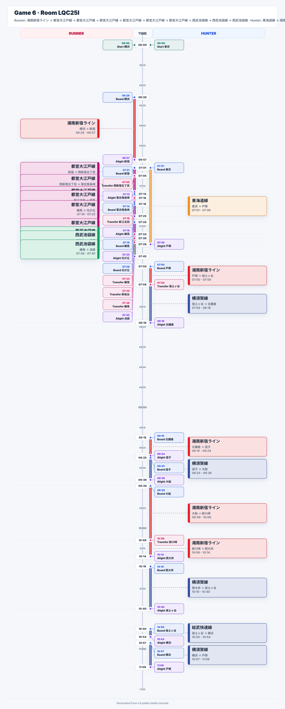
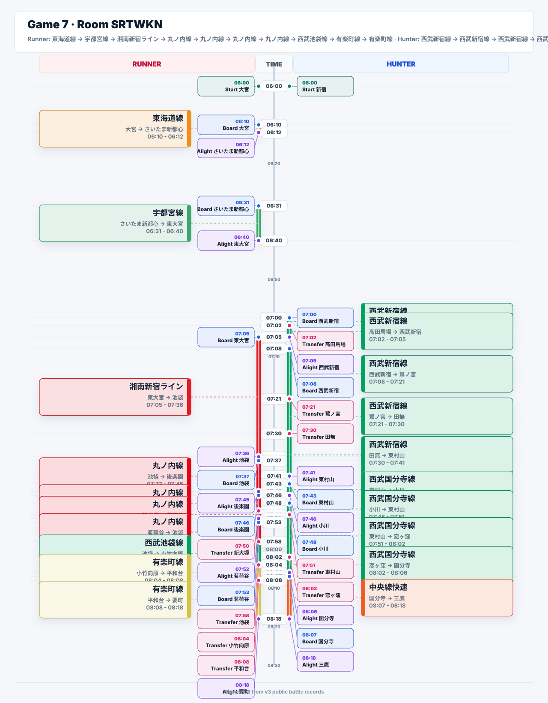
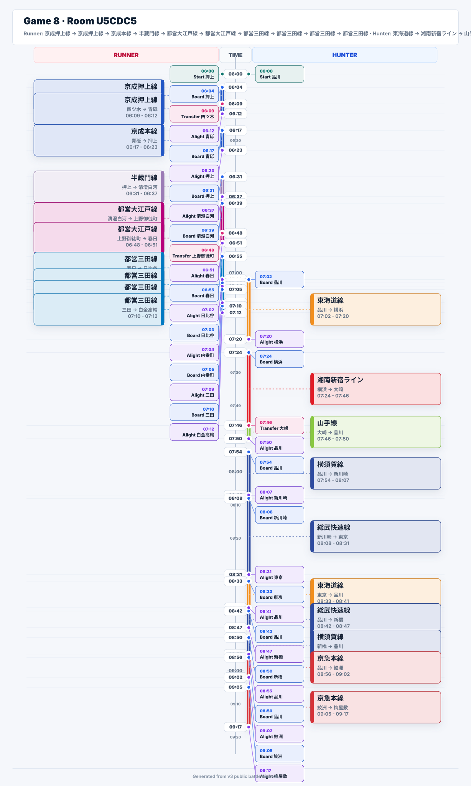
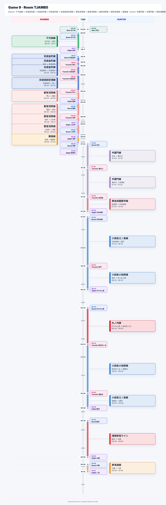

v3 Public Battle Timeline
Time runs down the center. Runner is on the left, Hunter is on the right. Ride intervals use route colors, and station or transfer callouts stay attached to their event times.
Game 1 · Room A1WUIT
Runner: 横須賀線 -> 横須賀線 -> 湘南新宿ライン -> 湘南新宿ライン -> 埼京線・川越線 -> 東急田園都市線 -> 東急田園都市線 -> 東急田園都市線 -> 東急田園都市線 -> 東急田園都市線 · Hunter: 総武快速線 -> 中央・総武線各駅停車 -> 中央・総武線各駅停車 -> 都営浅草線 -> 都営浅草線 -> 都営浅草線 -> 都営浅草線 -> 半蔵門線 -> 京成押上線 -> 京成押上線 · same_node at 東京 06:00 · phase ENDED

Game 2 · Room XPTWML
Runner: 日比谷線 -> 東武野田線 -> 東武野田線 -> 東武伊勢崎線 -> 東武伊勢崎線 -> 東武伊勢崎線 -> 京成押上線 -> 京成押上線 -> 京成押上線 -> 京成押上線 · Hunter: 日比谷線 -> 東武野田線 -> 東武野田線 -> 東武野田線 -> 東武野田線 -> 東海道線 -> 湘南新宿ライン -> 相鉄いずみ野線 -> 都営新宿線 -> 都営新宿線 · same_train on 日比谷線 07:02 · phase LIVE

Game 3 · Room 6343B0
Runner: 宇都宮線 -> 東海道線 -> 東海道線 -> 京浜東北線・根岸線 -> 埼京線・川越線 -> 有楽町線 -> 有楽町線 -> 有楽町線 -> 有楽町線 -> 有楽町線 · Hunter: 京王線 -> 京王井の頭線 -> 小田急小田原線 -> 小田急小田原線 -> 小田急小田原線 -> 小田急小田原線 -> 小田急小田原線 -> 千代田線 -> 小田急小田原線 -> 小田急小田原線 · 无 · phase LIVE

Game 4 · Room CN5Q35
Runner: 東急田園都市線 -> 東急田園都市線 -> 東急田園都市線 -> 東急田園都市線 -> 東急田園都市線 -> 東急田園都市線 -> 東急田園都市線 -> 東急田園都市線 -> 小田急江ノ島線 -> 小田急江ノ島線 · Hunter: 京浜東北線・根岸線 -> 京浜東北線・根岸線 -> 総武線 -> 都営三田線 -> 都営三田線 -> 都営三田線 -> 都営三田線 -> 都営三田線 -> 南北線 -> 南北線 · 无 · phase LIVE

Game 5 · Room 15331T
Runner: 京成本線 -> 東海道線 -> 山手線 -> 中央線 -> 中央線 -> 丸ノ内線 -> 丸ノ内線 -> 丸ノ内線 -> 丸ノ内線 -> 千代田線 · Hunter: 東武東上本線 -> 日比谷線 -> 日比谷線 -> 日比谷線 -> 日比谷線 -> 東急新横浜線 -> 相鉄いずみ野線 -> 相鉄いずみ野線 -> 都営新宿線 -> 西武新宿線 · 无 · phase LIVE

Game 6 · Room LQC25I
Runner: 湘南新宿ライン -> 都営大江戸線 -> 都営大江戸線 -> 都営大江戸線 -> 都営大江戸線 -> 都営大江戸線 -> 都営大江戸線 -> 西武池袋線 -> 西武池袋線 -> 西武池袋線 · Hunter: 東海道線 -> 湘南新宿ライン -> 横須賀線 -> 湘南新宿ライン -> 横須賀線 -> 湘南新宿ライン -> 湘南新宿ライン -> 横須賀線 -> 総武快速線 -> 横須賀線 · 无 · phase LIVE

Game 7 · Room SRTWKN
Runner: 東海道線 -> 宇都宮線 -> 湘南新宿ライン -> 丸ノ内線 -> 丸ノ内線 -> 丸ノ内線 -> 丸ノ内線 -> 西武池袋線 -> 有楽町線 -> 有楽町線 · Hunter: 西武新宿線 -> 西武新宿線 -> 西武新宿線 -> 西武新宿線 -> 西武新宿線 -> 西武国分寺線 -> 西武国分寺線 -> 西武国分寺線 -> 西武国分寺線 -> 中央線快速 · 无 · phase LIVE

Game 8 · Room U5CDC5
Runner: 京成押上線 -> 京成押上線 -> 京成本線 -> 半蔵門線 -> 都営大江戸線 -> 都営大江戸線 -> 都営三田線 -> 都営三田線 -> 都営三田線 -> 都営三田線 · Hunter: 東海道線 -> 湘南新宿ライン -> 山手線 -> 横須賀線 -> 総武快速線 -> 東海道線 -> 総武快速線 -> 横須賀線 -> 京急本線 -> 京急本線 · 无 · phase LIVE

Game 9 · Room TJAMB5
Runner: 千代田線 -> 京成金町線 -> 京成金町線 -> 京成金町線 -> 京成成田空港線 -> 都営浅草線 -> 都営浅草線 -> 都営浅草線 -> 都営浅草線 -> 銀座線 · Hunter: 半蔵門線 -> 半蔵門線 -> 東急田園都市線 -> 小田急江ノ島線 -> 小田急小田原線 -> 丸ノ内線 -> 小田急小田原線 -> 小田急江ノ島線 -> 湘南新宿ライン -> 東海道線 · 无 · phase LIVE

Game 10 · Room 2HEYZZ
Runner: 東急東横線 -> 東急東横線 -> 東急東横線 -> 東急東横線 -> 京急本線 -> 京急本線 -> 京急本線 -> 京急本線 -> 京浜東北線・根岸線 -> 京浜東北線・根岸線 · Hunter: 中央・総武線各駅停車 -> 中央・総武線各駅停車 -> 中央・総武線各駅停車 -> 中央・総武線各駅停車 -> 中央・総武線各駅停車 -> 中央線 -> 中央線 -> 中央線 -> 西武多摩川線 -> 西武多摩川線 · 无 · phase LIVE